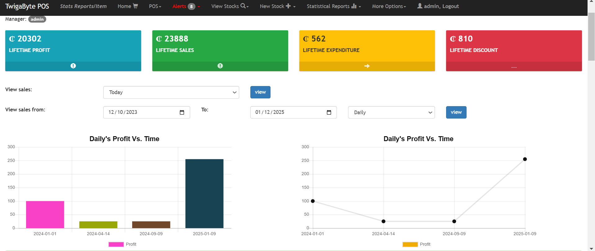

Solution-oriented full-stack software engineer and project manager with a demonstrated history of working in the IT industry, including banking, telecommunications, and e-commerce. I bring diverse knowledge and international experience from the USA, Ghana, Nigeria, South Africa, and Sri Lanka. Currently pursuing an M.S. in Information Technology at Worcester Polytechnic Institute (WPI) with a GPA of 4.0.
Code Ninjas, Northborough, MA (Aug 2024 - Present): Teaching programming concepts to students and maintaining personalized progress reports for over 15 students weekly.
Graduate Assistant - Worcester Polytechnic Institute, Worcester, MA (Sep 2023 - Present): Developed web applications to enhance research visibility and integrated Google Analytics for traffic analysis.
Banking Software Consultant - Inlaks (Nov 2022 - Aug 2023): Led deployment of Anti-Money Laundering software for 140+ rural banks and trained 20+ staff on new systems.
Full Stack Developer - Inlaks (Sep 2018 - Nov 2021): Automated processes to reduce task times and developed APIs for Temenos Core Banking applications.
Projects
TwigaByte POS: Designed a Point of Sale web application to manage inventory, sales, and expenses using Bootstrap, ChartJS, PHP, and MySQL. For more details, visit TwigaByte POS Details.

Research & Presentations
Explore my contributions and presentations on ResearchGate.
Performing Data Analysis on LinkedIn Dataset Using Python Programming: Presented in June 2024, DOI: 10.13140/RG.2.2.33980.86405. Conducted data analysis using Python packages (pandas, scikit-learn, seaborn, matplotlib) to explore anonymized LinkedIn datasets. Objectives included:
Determining the best place to work based on tenure length and emotional happiness index.
Analyzing relationships among followers, tenure length, and age.
Predicting employee attrition using the dataset.
Correlating attractiveness with beauty, skin health, face quality, and age.